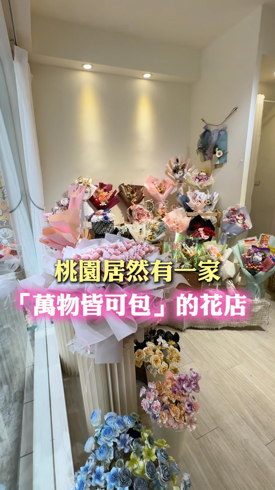

觀眾聊的是店員的反應、尷尬場面和笑點。
短影音收單學Chance 免費體驗課
短影音，
怎麼拍才有客人？
題目怎麼選、產品怎麼講、看完怎麼讓客人來問。
這兩小時，Chance 教你怎麼做。
Chance眾曜智庫 行銷顧問・《短影音變現學》作者
體驗課簡介
想靠短影音做生意，你也遇過這些嗎？
- 有人看，沒人問。
大家都在留言「好好笑」，卻沒人問價格、地址或怎麼買。
- 明天又要拍什麼？
跟過熱門題目，也試過別人的拍法，還是不知道自己的產品適合拍什麼。
- 錢花了，效果呢？
拍攝、剪輯、廣告都花了錢，卻沒多幾個客人。這支影片，到底拍給誰看？
成功是有方法的。
把方法學回去。
Chance 怎麼看一支短影音？
以下幾張圖出自 Chance 的課堂簡報。完整的判斷方法，體驗課現場一張一張拆給你。
自嗨型
老闆自己覺得不錯，沒什麼人想看。
- 還沒有留言
網紅型
流量很高，但留言跟生意無關。
- 犧牲小我，完成大我
- 裡面肯定有髒話，但我找不到證據
收單型
底下都在問：怎麼買、怎麼訂、怎麼加盟。
- 加盟怎麼加？
- 新竹竹北有嗎？
- 有沒有實體店面？
名氣不等於買氣，流量不等於生意。
低流量・高變現看的人不多，但剛好有需要。
高流量・高變現有人看，也有人來問、來買。
低流量・低變現可能剛開始，也可能還沒找對題目。
高流量・低變現大家看得很開心，卻沒有找你買。
粉絲的「數量」不是重點，粉絲的「純度」才是。你的帳號在哪一格？怎麼往上移，現場講。
- 表層思考
教煎肉，是健身教練的專利。
- 痛點思考
誰需要天天備餐？練出倒三角身材的人。
- 跳脫思考體驗課現場公開
- 最後由誰來拍體驗課現場公開
同一個題目，換一層想法，找上門的客人就完全不同。
結束的紅利隨便對嘴、跟風跳舞就換到百萬觀看的時代，過去了。
正要開始的紅利實體店家、傳統產業、To B 生意：受眾小但精準，正是收單型短影音最強的地方。
免費來聽這兩小時，你會學到什麼？
- 01 客人
想要什麼客人，就該拍什麼題目。
先決定想找什麼客人，再選影片題目。
- 02 題目
沒題材？從客人常問的問題開始。
把客人常問、常誤會的事，變成拍不完的題材。
- 03 開頭
第一句怎麼講，客人才會停下來？
第一句就講客人在意的事，讓人願意繼續看。
- 04 產品
你的產品很好，客人為什麼沒感覺？
把產品特色，講成客人想買的理由。
- 05 信任
客人還不相信你，影片能拍什麼？
拍工作現場、示範產品、分享案例，回答客人的疑慮。
- 06 詢問
影片看完了，怎麼讓客人來問？
影片最後怎麼說，才能讓人加 LINE、預約或來店裡？
體驗課裡會講的例子
同樣拍餐飲，為什麼有人只看熱鬧，有人開始問加盟？
觀眾開始問加盟、開店城市和合作方式。
你希望客人問什麼，就要先想：什麼題目會讓他想問？兩支影片吸引的人不一樣，留言當然也不一樣。Chance 會用這些例子，教你判斷自己的題目有沒有選對。
這場適合誰？
- 開店的你
想讓附近以外的人知道你，願意專程來店裡。
- 賣課程、做顧問的你
知道自己能幫客人，但不知道影片要怎麼講，才會有人來問。
- 想拓展市場的你
想找加盟主、經銷商，需要吸引會認真談合作的人。
- 負責公司行銷的你
每個月都有影片要交，也需要知道哪些內容對生意有幫助。
本場會講選題、內容做法與實際案例，不包含剪輯軟體的操作教學。
跟 Chance 合作之後，他們怎麼說？
客戶親自分享。點影片播放。
老人輔具，也能做出數倍營收
冷門議題怎麼拍？聽輔具業者分享合作後的生意變化。
房地產業主，邀 Chance 到歐洲拍片
從房地產的生意出發，業主為什麼決定請他出國拍短影音？
擁有 6 萬多名學生的 AI 課程老師
AI 課程怎麼讓更多人願意報名？聽老師親自分享。
這些老闆拍了短影音，生意有什麼改變？
加盟品牌
十三妹螺螄粉
68 家兩年展店・無廣告創造千萬營收
想找加盟主，影片就要拍給想做生意的人看。
餐飲品牌
毛一本
業績翻倍成為在地名店
怎麼讓看到餐點的人，真的想來店裡吃？
課程招生
AI 魔術師
6 萬名學員10 個月・變現近億
課程有內容，還要讓人知道為什麼值得學。

實體店家中原大學周邊花店
7 倍營收成長
店開在巷子裡，也能讓客人專程找過來。
案例成績由講師提供，為個別品牌經驗；實際成果依產品、市場與執行而異。
關於講師
Chance眾曜智庫 行銷顧問
要找什麼客人、影片講什麼、看完怎麼引導詢問，都是他操盤時要處理的事。
- 《短影音變現學》作者
- 品牌操盤經驗：趨勢科技、W Hotel、SUM、TutorABC
- 十三妹螺螄粉、AI 魔術師等專案幕後操盤
一支短影音代操 15,000 元，背後是選題、講產品、讓客人來問的一整套方法。11/19，Chance 拿做過的案例，講當時怎麼想、怎麼拍，還有你自己的產品可以怎麼做。
這場免費。
帶著你的問題來，好好聽這兩小時。
常見問題
還沒開始拍影片，也可以來嗎？
可以。從要找什麼客人、適合拍什麼題目開始講。帶著你的產品和客戶常問的問題來，更容易對照自己的情況。
一定要自己露臉嗎？
不一定。產品示範、工作過程、團隊出鏡都可以。課堂上會談不同的做法，重點是選擇適合自己生意、也能持續拍下去的方式。
會教拍攝和剪輯軟體嗎？
這兩小時主要講選題、影片內容和實際案例，不包含拍攝、剪輯軟體的操作教學。
在哪裡上課？怎麼報名？
2026/11/19（四）19:30–21:30，免費體驗課。地點：啟程空間，台北市南京東路三段9號5樓。在本頁填姓名、電話送出後，會自動開啟 Chance 官方 LINE，加入好友接收報名確認與到場提醒。